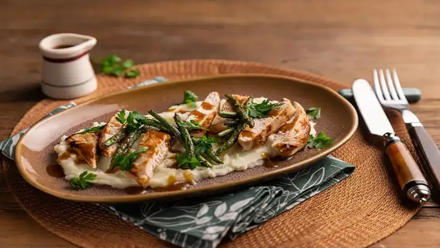

Filé de frango marinado com laranja e alecrim

Descrição
Esse prato vai te surpreender! Ele combina sofisticação e muito sabor e pode
ser acompanhado por um vinho de qualidade.
Ingredientes
- 2 filés de peito de frango
- 1 xícara de chá de caldo de laranja coado
- 2 colheres de sopa de azeite
- 1 dente de alho
- 2 colheres de chá de amido de milho
- 1 ramo de alecrim fresco
- Sal a gosto
- Pimenta-do-reino moída na hora
Modo de preparar
-
Com a lateral da lâmina da faca, amasse o dente de alho e
descasque.
-
Em uma tigela, coloque o alho, o alecrim, o caldo de laranja, 1 colher de
sopa de azeite e misture. Mergulhe os filés de frango, tampe e deixe
marinar por 20 minutos em temperatura ambiente.
-
Passado o tempo da marinada, com uma pinça, transfira os filés de frango
para um prato — deixe escorrer bem o líquido da marinada e seque os filés
com papel-toalha.
-
Leve uma frigideira grande ao fogo médio. Quando aquecer, regue com 1
colher de sopa de azeite. Tempere os filés de frango com sal e coloque um
ao lado do outro na frigideira, com a parte de cima (a mais lisinha) em
contato com o fundo.
-
Deixe dourar por 2 minutos de cada lado e abaixe o fogo — esse processo
vai selar a carne e manter o filé suculento.
-
Abaixe o fogo e deixe o filé de frango terminar de cozinhar por mais 3
minutos de cada lado. Atenção: o tempo pode variar dependendo do tamanho e
da espessura do filé, e o fogo tem que estar baixo mesmo, do contrário a
carne queima por fora e fica crua por dentro.
-
Enquanto isso, dissolva o amido de milho no líquido da marinada e tempere
com uma pitada de sal e uma de pimenta — esse líquido vai virar o molho do
filé de frango.
-
Transfira os filés dourados para um prato e mantenha a frigideira em fogo
baixo. Regue com o líquido da marinada de uma só vez (com o alho e o
alecrim) e, com uma espátula de silicone, raspe bem o fundo da frigideira
para dissolver os queimadinhos — eles dão mais sabor ao molho.
-
Continue mexendo em fogo baixo por cerca de 3 minutos, até formar um
molho levemente espesso.
-
Transfira o molho para uma tigela (ou molheira) passando por uma peneira.
Sirva os filés de frango com o molho.
voltar